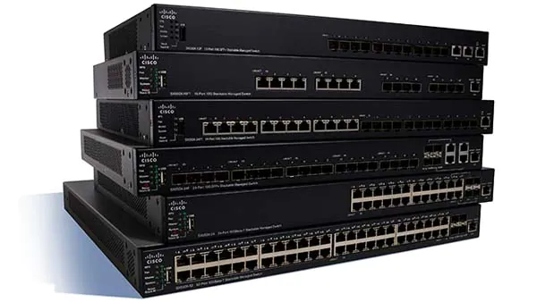
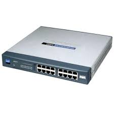
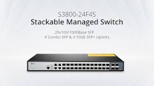

Network Router

Networking devices are physical or virtual equipment used to interconnect nodes or devices in a network and facilitate the communication and sharing of information or resources.

Network Switches enables fast in-network communication by routing data packets between devices in a smart way, creating a tunnel between source and destination that can't be interrupted by other network traffic. 
